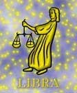

<html>
<head>
<title>Mérleg</title>
<script type="text/javascript" src="js/public.js"></script>
<script type="text/javascript" src="js/subpage.js"></script>
<script language="JavaScript1.1">
IMG_PICT="images/inte/horo/" 
horopict = ""
var subpage = new Array(
horopict+"Legfõbb törekvése, hogy megtalálja a tökéletes harmóniát, de jelentéktelen apróságok, már kibillentik lelki egyensúlyából. Rendkívül engedékeny, elõzékeny, ideális partner, munkatárs. Kellemes ember. A kisebb igazságtalanságokat inkább elviseli, csak ne kelljen harcolnia. Mindig, minden helyzetben a béke apostola. Nem a tettek embere, hanem a kivárásé. Mindig másnapra halogat mindent. A kötöttségeket, fegyelmet, kényelmetlenséget nem bírja, általában hevesen tiltakozik ellene. A hûség nem jellemzõ rá. Cselekedeteiben az érzelmek játsszák a fõ szerepet. Rendkívül hullámzó a kedélyállapotú. Könnyû õt befolyásolni. Az akadály elõtt megtorpan, feladja a harcot. Rendkívül fejlett a szépérzéke, remekül táncol. Megjelenésére igényes. Levegõ jegy, pozitív töltés, kardinális minõség. A jegy uralkodó bolygója a Vénusz: a harmónia, béke, szeretet, remény, szépség, kényelem jelképe. A mitológiában Vénusz volt a szépség és a szerelem istennõje. Kiindulva ebbõl a hasonlatból a Mérleg-ember különösen vonzódik a szép dolgokhoz, a mûvészetekhez. A harmónia megteremtésére törekszik, mert érzi, hogy a boldogsághoz így tud közel kerülni. A Vénusz vonzó bájt ad szülötteinek, és jó ízlést. Életélvezete finom, lehalkított és gyengéd. Személyisége kibontakoztatásához szükségét érzi egy \"másik ember\"-nek, legyen az akár barát, akár szerelmi társ. Ösztönzõ vágyat érez a kapcsolatteremtésre, és azon belül az egyetértésre. ",
horopict+"A levegõ-jegyeknél megmutatkozó kapcsolatteremtési képesség tehát még hangsúlyozottabb lesz. A többi levegõ-tulajdonság: a közlékenység és értelem magyarázza, hogy fontos számára a beszélgetés, hogy gondolatait kicserélhesse másokkal. Mint pozitív töltésû, kardinális minõségû jegynél, nála is észrevehetõ a kifelé irányuló tevékenység és az önkifejezésre való törekvés. Szeret a saját maga útján járni és nehezen tûr maga fölött bárkit. A Mérleg-ember tökéletes lelki egyensúlyra törekszik. A dolgok egyensúlyba hozásának vágyából fakad, hogy hajlik az együttmûködésre. S ez egy igen értékes tulajdonsága, mert az emberi együttélés egy békés, hajlékony társsal sokkal kellemesebb, mint mondjuk egy erõszakossal. Igazságérzete rendkívül fejlett. A Mérleg-ember a dolgokat több oldalról vizsgálja. Könnyû együtt lenni vele, mert o maga is akarja a társaságot, és kellemes légkört akar teremteni. Szépen berendezett otthonra vágyik. A szépség alatt azonban nem a kínos rendet és a pedáns tisztaságot érti, mert ez fáradságos munkát igényelne, és ez nem lenne számára kellemes. A Mérleg-ember szívesen halasztja elintéznivalóit holnapra, ha azok kényelmetlenséggel járnak. Úgy gondolja, majd az idõ megoldja a dolgokat és kiegyensúlyozza. Meggyõzõdése, hogy egy szerencsés tárgyalás, vagy kiegyezés százszorta jobb, mint a harccal kivívott gyõzelem. ",
horopict+"A Mérleg cselekedeteit inkább az érzelem, mint az értelem vezérli, ezért kedélyállapot-hullámzásai is erõsek: hol telve van reménnyel, hol meg letörten egy helyben topog. Általában képes felfedezni mindennek a jó oldalát, mégis hajlamos a szomorúságra is, de mivel törekszik a kiegyensúlyozottságra, ez hamar elmúlik. A változatosság utáni vágy is erõs benne, ezért szívesen kezd új foglalkozásba. Személyes szabadságára nagy súlyt fektet, és hevesen tiltakozik minden kötöttség ellen, mert az kényelmetlenséggel járna. Erõs vonzást érez a könnyû élethez. Nem szeret szembesülni önmagával, nem szeret a dolgok mélyére nézni, mert ott konfliktusok lehetnek. Nyilvánosság utáni vágya és közéleti szereplési kedve hangsúlyozott. A dolgokat több oldalukról, több szempontból is megvizsgálja és igyekszik többféle szempontot, véleményt összhangba hozni, de a béke érdekét szolgáló engedékenysége sok hibának is a forrásává válhat. Rendszerint diplomatikusan és tapintatosan bánik másokkal. A mûvészi érzéke adja, hogy a zenében teljesen fel tud oldódni. Kitûnõ táncos. Megjelenése, fellépése kellemes és szeretetre méltó. Meglehetõsen romantikus. Vonzó személyisége varázsával magához vonzza a másik nemet. Mint minden másban, itt is kiegyensúlyozottságra törekszik. A Mérleg-no azt szereti, ha kedveskednek neki, körüludvarolják. Nem szereti, ha erõszakosan lerohanják és ajtóstul rohannak a házba. ",
horopict+"Partnerével szemben vannak elvárásai. Szereti, ha az együttlétnek, találkozásnak megadják a módját. Számára a szerelem legizgalmasabb része az udvarlás. Ahhoz, hogy feloldódjon a szerelemben, és együtt érezhessen partnerével, szükséges számára a csábító környezet, színház, zene, álmodozóvá tévõ bor, s ez jobban felmelegíti, mint bármilyen tüzes ostrom. Egy-egy idejében elhelyezett kedvesség, bók, dicséret, szeretet-megnyilvánulás sokat jelent neki, s mivel úgy érzi, hogy ebbõl a sok is kevés, ha teheti, hódításai számát növeli. Házasságában fõként a pajtási viszony dominál. Ritkán veszekszik, mert az \"felkavarná\" az egyensúlyt. A Mérleg-ember olyan munkaterületen érzi jól magát, ahol szépérzéke, mûvészi hajlamai kielégítést nyerhetnek. Döntéshelyzetekben a mindkét oldal állandó megértésének vágya határozatlansághoz, habozáshoz vezethet. Nehezen tud \"nem\"-et mondani és azután szenved miatta. (Ez abban gyökerezhet, hogy nagyon fontos számára, hogy szeressék, figyeljenek rá, és úgy érzi, ha nemet mond, nem fogják szeretni.) Megpróbál minden embernek a kedvében járni, s mivel ez eleve nem sikerülhet, ez elkedvetleníti. A szeretet iránti erõs igény motiválja önközpontúságát is, s ha nem kapta meg az elégséges figyelmet, akkor elsõsorban a saját kényelmével kezd törõdni. Házasságában a kényelemszeretet azt a veszélyt rejti magában, hogy nem figyel a másik igényeire, ha az o kényelmének rovására megy. ",
horopict+"A túlzott kiegyezés utáni vágy félúton megállíthatja. ",
horopict+"<b>Bolygója:</b> a Vénusz<br>"
+"<b>Eleme:</b> a levegõ<br>"
+"<b>Természete:</b> kardinális<br>"
+"<b>Erényei:</b> békés természetû, rugalmas, nem erõszakos, kellemes partner, könnyû vele együtt élni, dolgozni<br>"
+"<b>Hibái:</b> befolyásolható, határozatlan, túlérzékeny, szeszélyes<br>"
+"<b>Testrésze:</b> a vese <br>"
+"<b>Betegségre való hajlam:</b> vese- és húgyúti betegségek, derékfájás és mozgásszervi panaszok, visszérgyulladás<br>"
+"<b>Védõkövek:</b> akvamarin<br>"
+"<b>Szerencsekövek:</b> opál, topáz, korall, lapis lazuli, ceyloni padparadsa, zafír, turmalin"
);
</script>
</head>
<BODY background="images/public/background/bg1.jpg">
<script language="JavaScript1.1">
	firstdraw("MÉRLEG szeptember 24. - október 23.");
</script>
</body>
</html>